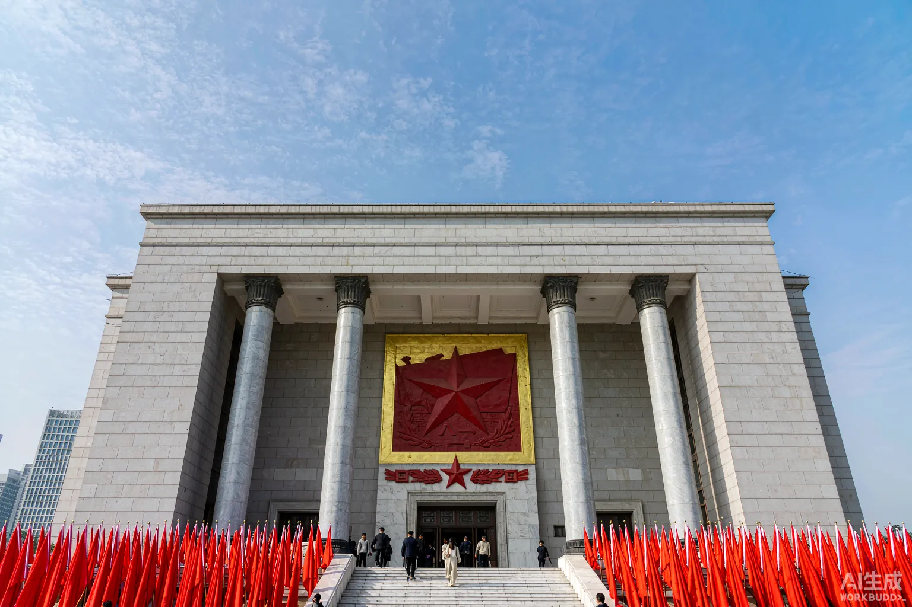
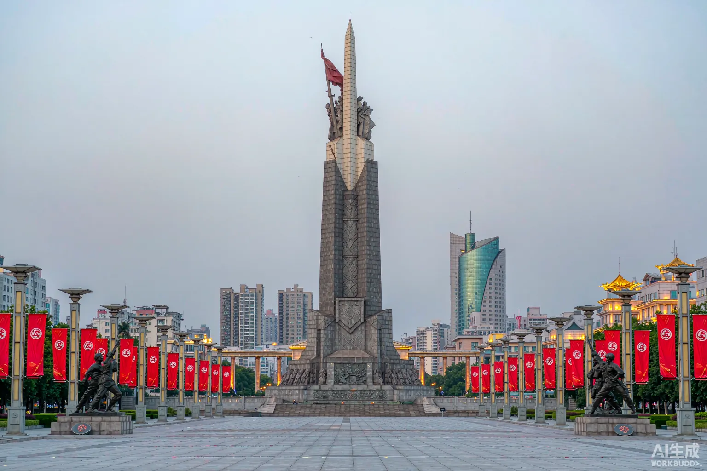
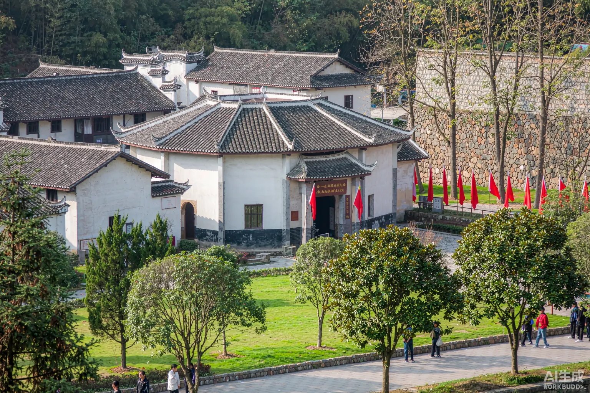

1927 年 8 月 1 日凌晨两点，南昌城头一声枪响，宣告了中国共产党领导的人民军队的诞生。 从此，"八一"两个字，刻进了这座城市的名字，也刻进了一个民族的记忆。
四个小时，一座城，一个新时代
大革命失败后，中共中央决定在南昌举行武装起义，成立前敌委员会，周恩来任书记。起义部队以"国民革命军第二方面军"名义集结赣江之滨。
贺龙、叶挺、朱德、刘伯承率部两万余人起义，颈系红领带、臂扎白毛巾、马灯和手电筒上贴红十字。经四小时激战，全歼守敌三千余人，占领南昌城。
起义部队沿用"左派国民党"旗帜发表宣言，提出打倒帝国主义、打倒新旧军阀、实行土地革命——中国共产党独立领导武装斗争由此开始。
起义军按计划撤离南昌，南下广东。朱德率部在三河坝殿后，转战湘南，保存下革命火种。
南昌起义保存的火种与秋收起义部队在井冈山会师——南昌与井冈山，一城一山，共同托举起中国革命的黎明。
中华苏维埃共和国临时中央政府决定 8 月 1 日为中国工农红军成立纪念日，后成为中国人民解放军建军节。
走进历史现场 · 全部免费开放

馆址即起义总指挥部旧址（江西大旅社），"第一枪"雕塑立在庭院中央。馆内陈列起义全程史料，军旗、马灯、怀表——每一件文物都在讲述那个凌晨。

南昌的心脏。纪念塔正面镌刻叶剑英元帅题写的"八一南昌起义纪念塔"，塔顶汉阳造步枪与八一军旗直指苍穹——全国最大的城市中心广场之一。

1938 年新四军在此完成组建并誓师北上抗日。极具史料价值的旧址群，见证了南方八省红军游击队改编为国民革命军陆军新编第四军的历史时刻。
起义前夕朱德利用滇军旧谊打探敌情、宴请敌军团长，为起义成功扫清障碍。花园角二号旧居与教育团旧址，保存着这段惊心动魄的潜伏往事。
子固路一栋两层小楼，起义时任国民革命军第二十军军长的贺龙在此坐镇指挥。楼内大会议室的长桌旁，仿佛还坐着那位时年 31 岁就说出"我完全听共产党的话"的军长。
八一广场北侧，1953 年建成。堂内纪念 25 万余名江西籍烈士，其中无名烈士占多数——来这里读完江西的革命长卷，再走到广场中央看军旗，感受完全不同。
中山路的八一起义纪念馆—百花洲—滕王阁，串起一条"红色 + 千年豫章"的一日徒步线。夜里登上赣江畔的秋水广场，看一江两岸灯光秀里流动的军旗图案——历史与当下在此刻同框。
展柜里的那个凌晨
马灯照过深夜的行军路，怀表停在决定历史的时刻。军旗、马灯、怀表——每一件文物，都在讲述「第一枪」打响前的寂静。
江西大旅社的庭院中央，「第一枪」雕塑直指苍穹。八一军旗从这里升起，人民军队从这里走来。
把这些记下来，出发会顺利很多
跨越时空的精神坐标
在革命遭受严重挫折的至暗时刻，中国共产党人没有退缩，而是拿起武器、独立领导武装斗争——第一枪就是宣言书。
"党指挥枪"的原则在南昌起义中奠基。从此这支军队听党话、跟党走，从胜利走向胜利。
起义宣言中写明"实行土地革命""为一切被压迫民众而战"——人民军队为人民，初心自诞生之日确立。
颈系红领带、臂扎白毛巾的识别标记，行动令行禁止。一支军队的纪律基因，在第一夜就刻进了骨血。
在城市发动大规模武装起义，是马克思主义中国化军事实践的第一次大胆尝试。
从小米加步枪到今天的人民军队，"八一"军旗上永远写着南昌的名字。
南昌是全国唯一一座以历史事件命名的省会城市：八一大道、八一广场、八一大桥、八一公园、八一中学……"八一"是这座城市的姓氏。每天清晨，八一广场的升旗仪式庄严肃穆；军乐节上，人民军队的军歌响彻赣江两岸。
红色文化在这里与现代都市交融：赣江东岸的滕王阁吟诵着王勃的千古名句，西岸的秋水广场灯光璀璨；而在中山路上，江西大旅社的青灰西式门楼静静矗立——1927 年的那个凌晨，起义部队就从这里出发，走向一个新时代。